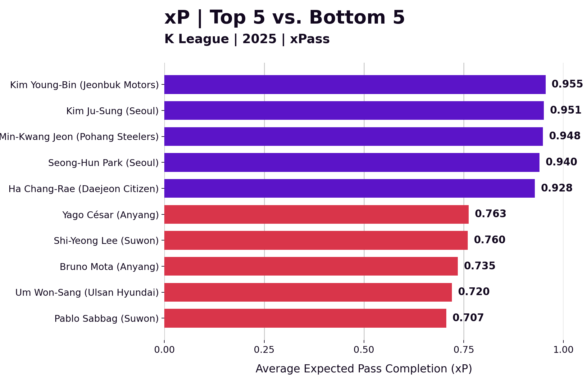
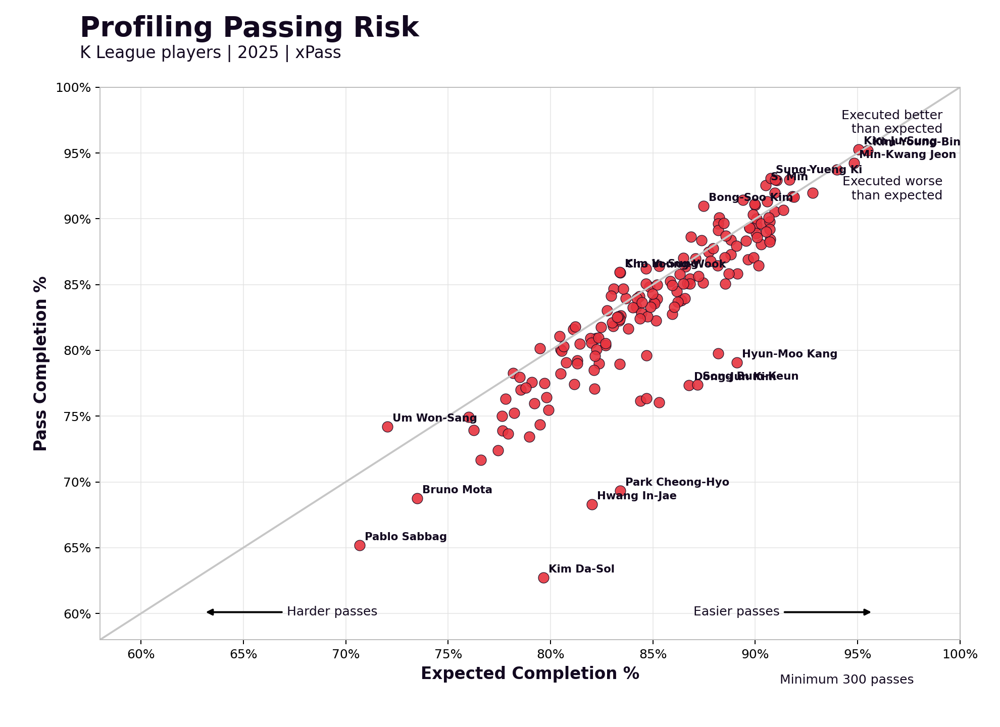
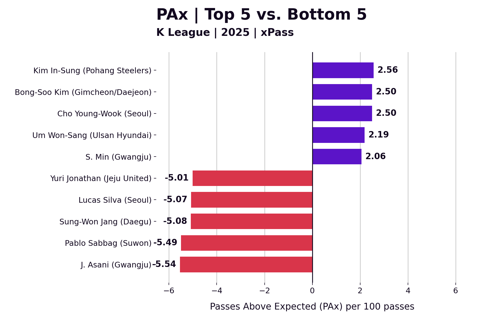
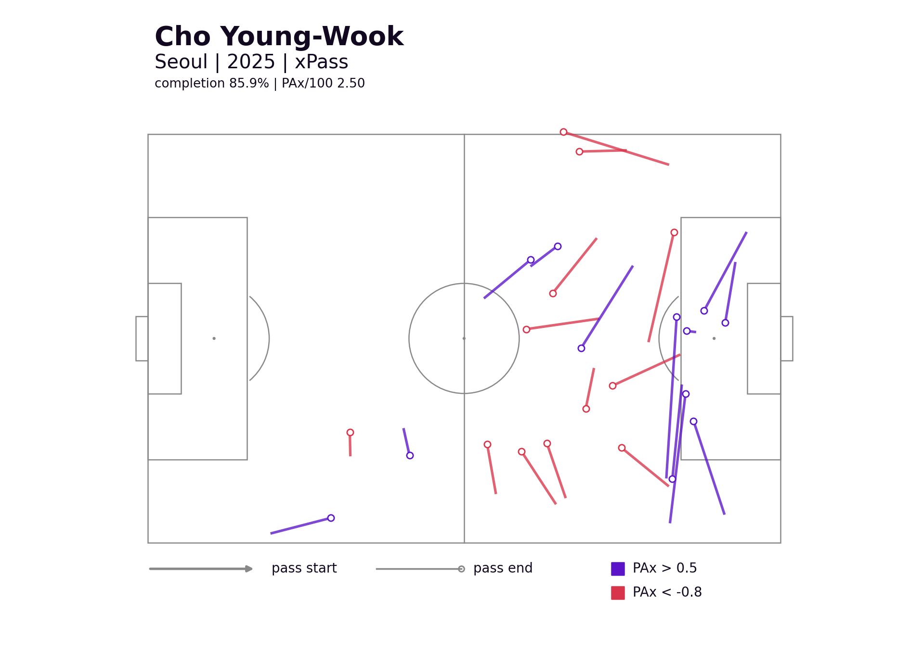
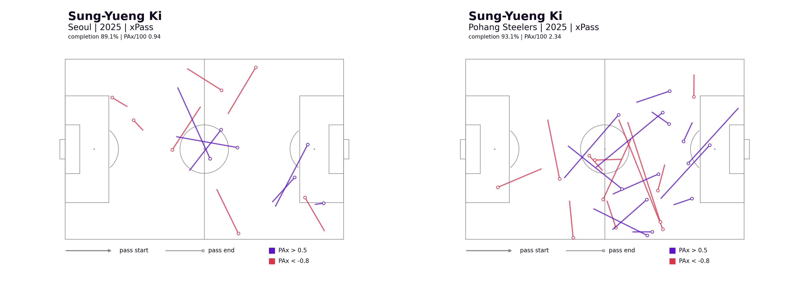
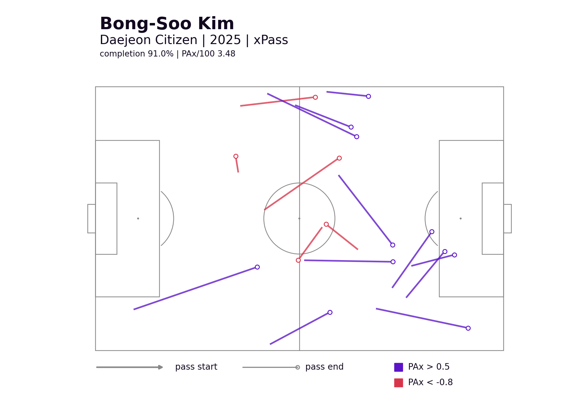

2025년 K리그에서 패스 성공률이 높은 선수는 누구일까요?
이 질문은 익숙합니다. 축구 중계에서도, 경기 리포트에서도 패스 성공률은 자주 등장합니다. 하지만 이 숫자만으로는 중요한 차이를 놓치기 쉽습니다. 모든 패스가 같은 난이도를 가진 것은 아니기 때문입니다. 센터백이 옆 센터백에게 짧게 연결하는 패스와, 공격수가 압박을 받으며 박스 안으로 찔러 넣는 패스는 모두 기록지에 “패스 1개”로 남습니다. 하지만 두 패스의 어려움은 전혀 다릅니다.
그래서 이번 글에서는 단순 패스 성공률이 아니라 xPass (Expected Pass Completion)를 사용합니다. xPass는 각 패스가 성공할 확률을 예측한 값입니다. 패스가 시작된 위치, 도착 위치, 거리, 방향, 압박 상황, 수신 위치 등을 바탕으로 “이 패스는 원래 얼마나 성공하기 어려웠는가”를 추정합니다. 즉 xPass는 이런 질문에 답합니다.
이 선수는 쉬운 패스를 많이 성공시킨 걸까, 아니면 어려운 패스를 기대보다 잘 성공시킨 걸까?
이번 글에서는 2025년 K리그 선수들의 xPass와 PAx를 통해, 패스 성공률 뒤에 숨어 있는 차이를 살펴보겠습니다.
xPass란 무엇인가
xPass는 패스가 성공할 확률을 추정한 값입니다.
예를 들어 xPass 0.95의 패스는 비슷한 조건에서 평균적으로 100번 중 95번 정도 성공할 것으로 예상되는 패스입니다. 반대로 xPass 0.60의 패스는 100번 중 60번 정도 성공할 것으로 기대되는, 훨씬 어려운 패스입니다.
xPass가 참고하는 요소는 보통 다음과 같습니다.
- 패스 시작 위치와 도착 위치
- 패스 거리와 방향
- 전진 패스인지, 횡패스인지, 후방 패스인지
- 공격 전개 상황과 경기 국면
- 수비 라인과 주변 압박
- 패스를 받는 선수의 위치와 상황
즉 xPass는 패스의 성공 여부만 보는 지표가 아니라, 그 패스가 원래 얼마나 성공하기 쉬웠는지 혹은 어려웠는지를 함께 고려합니다.
여기서 한 단계 더 나아가 PAx (Pass Above Expected)를 볼 수 있습니다. PAx는 실제 패스 성공 결과에서 기대 성공값을 뺀 값입니다. 성공한 패스는 1, 실패한 패스는 0으로 두고, 여기에 xPass를 비교합니다.
예를 들어 xPass 0.70의 패스를 성공시키면 +0.30 PAx가 쌓입니다. 반대로 xPass 0.90의 패스를 실패하면 -0.90 PAx가 됩니다. 그래서 PAx는 단순히 많이 성공한 선수가 아니라, 기대보다 얼마나 더 잘 성공시켰는지를 보여줍니다.
그래서 xPass를 볼 때 먼저 확인해야 할 것은, “누가 패스를 많이 성공시켰는가가 아니라, 누가 어떤 난이도의 패스를 시도했는가” 입니다.
따라서, 이번 분석에서는 먼저 K리그 선수들이 시도한 패스의 평균 xPass를 살펴보겠습니다.
이를 통해 누가 상대적으로 쉬운 패스를 많이 시도했고, 누가 더 어려운 패스를 많이 감수했는지 확인할 수 있습니다.


평균 xPass가 가장 높은 선수들은 김영빈, 김주성, 전민광, 박성훈, 하창래였습니다. 이 선수들의 평균 xPass는 대체로 0.93에서 0.96 사이였습니다.
이 결과는 이들이 “쉬운 패스만 하는 선수”라는 뜻이 아닙니다. 오히려 팀의 후방 빌드업에서 안정적으로 공을 순환시키는 역할을 많이 맡았다는 뜻에 가깝습니다. 센터백이나 후방 자원은 패스 성공률이 높게 나오기 쉽지만, 그 안에서도 압박을 피하고 다음 전개를 여는 선택은 팀 구조에서 중요합니다.
반대로 평균 xPass가 낮은 쪽에는 파블로 싸박, 엄원상, 브루노 모따, 이시영, 야고 세자르가 있었습니다. 이들은 상대적으로 더 전진된 위치, 더 좁은 공간, 더 어려운 타이밍에서 패스를 시도한 비중이 높았습니다.
따라서 평균 xPass는 선수를 좋고 나쁘게 나누는 지표가 아닙니다. 그 선수가 어떤 패스를 주로 요구받았는지, 어떤 위험을 감수했는지를 보여주는 출발점입니다.
기대보다 패스를 잘 성공시킨 선수들
그 다음으로 볼 지표는 PAx입니다.
PAx는 같은 성공률 안에서도 차이를 만들어냅니다. 패스 성공률이 비슷하더라도 더 어려운 패스를 성공시킨 선수는 더 높은 PAx를 기록할 수 있습니다. 반대로 쉬운 패스를 많이 실패하면 성공률이 크게 낮지 않아도 PAx는 떨어질 수 있습니다.

2025년 PAx/100 상위권에는 김인성, 김봉수, 조영욱, 엄원상, 민상기가 있었습니다. 이들은 단순히 패스 성공률이 높은 선수가 아니라, 자신이 시도한 패스의 난이도를 감안했을 때 기대보다 더 많은 패스를 성공시킨 선수들입니다.
가장 높은 값을 기록한 김인성은 306개 패스에서 85.9%의 성공률을 기록했고, PAx/100은 +2.56이었습니다. 같은 난이도의 패스를 100개 시도했을 때 평균 기대보다 약 2.6개를 더 성공시킨 셈입니다.
김봉수는 김천과 대전에서의 기록을 합치면 1,091개 패스, 성공률 91.3%, PAx/100 +2.50으로 전체 2위였습니다. 특히 대전 소속 기간만 따로 보면 +3.48로 리그에서 가장 높은 값을 기록했습니다.
포지션 특수성을 고려해서 골키퍼를 제외한 선수들 중 PAx가 낮은 선수들은 아사니, 파블로 싸박, 장성원, 루카스 실바, 유리 조나탄이었습니다. 패스 성공률과 PAx는 선수의 역할과 패스 선택에 크게 영향을 받기 때문에, 이 결과를 곧바로 패스 능력 부족으로만 읽기는 어렵습니다. 다만 이들은 자신이 시도한 패스 난이도를 감안했을 때 평균 기대보다 성공시킨 패스가 적었고, 공격 지역 연결, 크로스, 전진 패스처럼 실패 위험이 큰 선택에서 손실이 누적됐을 가능성이 있습니다.
PAx 상위권 선수들은 어떻게 달랐나
이제 PAx 기준으로 2025년 리그에서 상위권에 위치한 선수들의 패스맵을 보겠습니다.
보라색은 기대보다 더 가치 있게 성공한 패스, 붉은색은 기대 대비 손실이 컸던 패스를 나타냅니다. 모든 패스를 표시한 것은 아니고, PAx 차이가 크게 나타난 장면만 골라 선수의 패스 성격을 보기 위한 그림입니다.

조영욱의 패스맵은 공격수의 패스 성공률을 어떻게 봐야 하는지 잘 보여줍니다.
조영욱의 패스 성공률은 85.9%였습니다. 수비수나 후방 미드필더와 비교하면 아주 높은 수치처럼 보이지 않을 수 있습니다. 하지만 패스가 나온 위치를 보면 이야기가 달라집니다. 전방과 박스 근처, 특히 오른쪽 공격 채널에서 성공한 어려운 패스가 눈에 띕니다.
공격 지역의 패스는 수비 압박이 강하고 선택지가 빠르게 닫힙니다. 이 구간에서 기대보다 많은 패스를 성공시킨다는 것은 단순한 안정성이 아니라 공격 연결 능력에 가깝습니다.

기성용은 시즌 중 서울과 포항에서 모두 뛰었기 때문에, 한 시즌 전체를 하나의 숫자로만 보면 팀과 역할의 차이가 섞입니다. 서울 시절의 패스맵은 기대보다 좋은 성공과 기대보다 아쉬운 실패가 모두 나타나지만, 특정 구역이나 방향에 강하게 집중되지는 않았습니다. PAx/100은 +0.94로 여전히 플러스였지만, 초과 성과의 패턴은 비교적 분산되어 있었습니다.
반면 포항 시절에는 그림이 더 선명합니다. PAx/100은 +2.34로 높아졌고, 중원에서 전방이나 측면으로 연결하는 패스에서 기대보다 좋은 성공이 더 자주 나타났습니다. 이는 기성용 개인의 패스 능력만이 아니라, 포항에서의 역할, 주변 선수의 움직임, 패스를 받을 수 있는 각도와 공간이 함께 만든 결과로 볼 수 있습니다.
한 가지 눈여겨볼 점은, 왼쪽에서 오른쪽 전방으로 길게 연결하는 패스에서 붉은색 패스가 여러 차례 나타났습니다. 기성용은 중원에서 방향을 바꾸거나 전방으로 길게 연결할 수 있는 선수지만, 이 패스가 항상 안정적으로 성공한 것은 아니었습니다. 상대가 오른쪽 전방 선택지를 미리 닫거나, 받는 선수 주변의 압박이 빠르게 붙는 상황에서는 기대보다 낮은 결과가 나왔습니다.
이 지점은 양쪽 팀 모두에게 전술적 힌트를 줍니다. 같은 팀 입장에서는 기성용이 전환 패스를 시도하기 전에 오른쪽 전방의 수신자에게 더 나은 각도와 공간을 만들어줄 필요가 있습니다. 반대로 상대팀 입장에서는 기성용이 왼쪽에서 공을 잡았을 때 특정 방향의 패스를 유도하거나 수신자를 먼저 압박해, 그의 패스 선택지를 제한하는 전략을 설계할 수 있습니다.

김봉수의 패스맵을 보면 특정 한 구역에만 장점이 몰려 있기보다, 중원과 측면, 전방 연결에서 보라색 패스가 고르게 나타납니다. 시즌 통합 패스 성공률도 91.3%로 높았고, 그 성공률이 단순히 쉬운 패스의 반복만으로 만들어진 것도 아니었습니다. 특히 중앙에서 오른쪽 측면, 혹은 공격 진영으로 향하는 전진 패스들이 눈에 띕니다. 조영욱이 공격 지역에서 마지막 연결에 가까웠고, 기성용이 방향 전환으로 경기장을 넓게 썼다면, 김봉수는 중원에서 다음 구역으로 공을 옮기는 역할에 가까웠습니다.
이런 유형의 선수는 팀의 전개에서 눈에 덜 띌 수 있습니다. 하지만 xPass로 보면 안정적으로 연결하면서도 기대보다 더 많은 패스를 살려낸 기여가 드러납니다.
패스 성공률 85%는 무엇을 말해주지 못하는가
패스 성공률은 결과를 보여줍니다. 하지만 그 패스가 얼마나 어려웠는지는 말해주지 않습니다.
패스 성공률 85%는 좋은 숫자일까요?
답은 “상황에 따라 다르다”입니다.
후방에서 쉬운 패스를 주로 시도한 선수의 85%라면 아쉬운 결과일 수 있습니다. 반대로 공격 지역에서 어려운 패스를 계속 시도한 선수의 85%라면 매우 좋은 결과일 수 있습니다.
xPass는 이 차이를 나눠서 볼 수 있게 해줍니다. 패스 성공률이 결과를 보여준다면, xPass는 그 결과가 어떤 난이도에서 나왔는지를 보여줍니다. 그리고 PAx는 그 난이도를 감안했을 때 누가 기대보다 더 잘 수행했는지를 보여줍니다.
그래서 xPass로 본 좋은 패서는 한 가지 모습만 갖지 않습니다. 안정적으로 후방을 순환시키는 선수도 있고, 공격 지역에서 어려운 연결을 성공시키는 선수도 있습니다. 긴 전환 패스로 전개 방향을 바꾸는 선수도 있고, 중원에서 작은 차이를 계속 만들어내는 선수도 있습니다.
패스 성공률은 좋은 출발점입니다. 하지만 그 숫자만으로 선수의 패스 가치를 끝까지 설명하기는 어렵습니다. 패스가 어디에서, 누구에게, 어떤 압박 속에서, 어떤 목적을 갖고 나왔는지를 함께 봐야 합니다.
그때 비로소 “패스를 잘한다”는 말이 조금 더 구체적인 의미를 갖게 됩니다.
분석에 대한 질문이나 협업 제안은 thedatadribblers@gmail.com으로 보내 주세요.
코드 구현 이민호
본문 작성 이민호
검수 고상기 교수